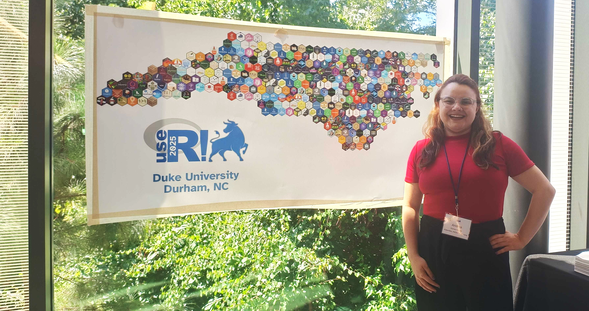
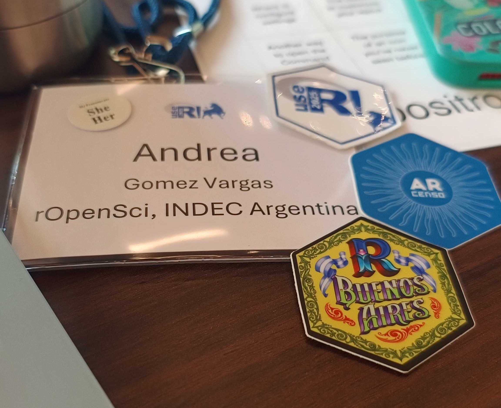
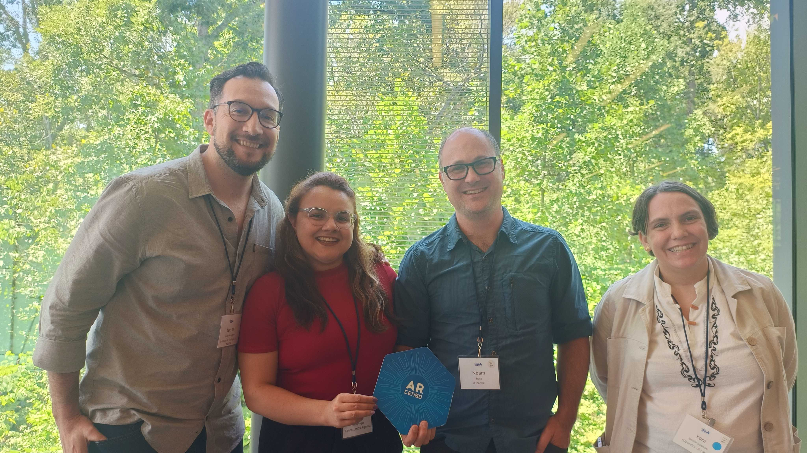
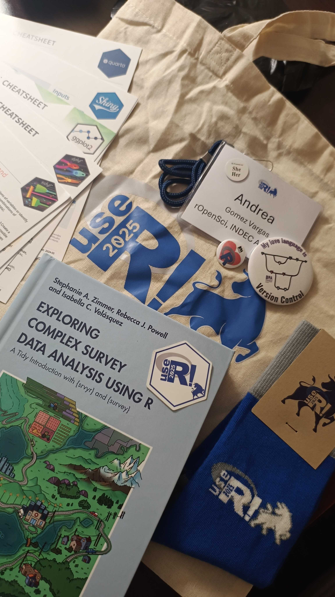

useR! 2025 - The R User Conference


Del 8 al 10 de agosto de 2025 participé en useR! 2025, la conferencia internacional de usuarios de R, realizada de forma presencial en Duke University en Carolina del Norte, Estados Unidos. Fue mi primera experiencia participando en persona, gracias al apoyo de Rconsortium.
Asistí a muchas actividades, una de las primeras fueron los talles, asistí a dos, el primero sobre Debugging Tools for Functions in R con E. David Aja y Shannon Pileggi, y Getting Started with Positron: A Next-Generation IDE for Data Science con Jennifer Bryan y Julia Silge. Fueron dos experiencias muy valiosas para mi trabajo cotidiano, guiadas por referentes internacionales con muchísima experiencia y calidez.
Charlas favoritas
Disfruté mucho en personas escuchar y compartir charlar sobre R para debatir y aportar a la convversación, mis keynotes favoritas:
Lightning talks favoritas de esta edición:
- Bringing the fun of hex stickers to your R session — Luis D. Verde Arregoitia (Instituto de Ecología AC - INECOL)
- Storytelling with ggplot2: Using custom functions to sequence visualizations — McCall Pitcher (Duke University)
- tinytable: A lightweight package to create simple and configurable tables in a wide variety of formats — Vincent Arel-Bundock (Université de Montréal)
- gfwr: an R package to access data from the Global Fishing Watch APIs — Andrea Sánchez-Tapia (Global Fishing Watch)
- Rediscovering R for Library Data Instruction with Google Colab — Ahmad Pratama (Stony Brook University)
La sesión Package lifecycle
Presentar ARcenso por primera vez en inglés, frente a una audiencia internacional, fue una experiencia que no voy a olvidar. Más allá del desafío, fue una oportunidad para ver cómo una iniciativa de datos censales puede inspirar, conectar y aportar a la comunidad open source.
Compartí espacio junto a Noam Ross, director de rOpenSci, y fue interesante ver cómo se conectan los proyectos en sus distintos niveles de experiencia, así como otros que también promueven la construcción colaborativa de paquetes en R. También estuvieron presentes Yanina Bellini, community manager de rOpenSci y coordinadora del programa de campeones, y Luis Verde, mi mentor en el programa, quienes junto al resto de los asistentes pudieron ver mi charla y conocer de cerca el crecimiento del proyecto.

Highlights
Me reencontré con Stephanie Zimmer, autora del libro Exploring Complex Survey Data Analysis Using R: A Tidy Introduction with {
srvyr} and {survey}. Nos habíamos conocido el año pasado y esta vez volvió a acompañarme un montón durante mi estadía y ¡además me regaló su libro! 💛El obsequio de la conferencia fueron unas medias al mejor estilo Duke University, probablemente las más académicas que tengo 🧦😄
Descubrí la iniciativa Digital Research Academy, que ofrece capacitaciones gratuitas sobre control de versiones, proyectos y R. Una propuesta hermosa para seguir aprendiendo y colaborando 🌍
Me traje varios cheatsheets de Posit (de Shiny, Quarto, RStudio…) para compartir con la comunidad porque nunca está de más tenerlos a mano y repartir conocimiento.

Comunidad
Pude reencontrarme con colegas y amigos con quienes colaboro de forma online, y también participar del evento de networking de R-Ladies, donde conocí personas de distintas partes de Carolina del Norte, de Estados Unidos y del mundo. Fue una experiencia muy enriquecedora para descubrir historias, perfiles académicos y profesionales diversas, e invitarlas a seguir conectando y compartiendo.
During useR! 2025, we had a special moment to gather at the R-Ladies meetup. It was a great opportunity to connect, share experiences, and keep strengthening our global community. 💜
Find your local chapter and get involved: rladies.org/about-us/inv…
#useR2025
[image or embed]— R-Ladies (@rladies.org) 13 de agosto de 2025, 14:17
Fue muy gratificante regresar a casa con tantas experiencias valiosas en tan poco tiempo. La oportunidad de encontrarnos en persona es única, y poder asistir gracias al apoyo de la comunidad tiene un valor enorme. En un contexto de fuertes limitaciones presupuestarias en Argentina, participar de este tipo de eventos representa un impulso muy significativo para mi trabajo, para la comunidad y para el desarrollo de mi ARcenso.
Quiero agradecer especialmente a Mine Çetinkaya-Rundel, Chair de la conferencia y a Heidi Seibold del Comité Organizadory, por hacer posible mi asistencia, sin ellas esto no hubiera sido posible.
Las presentaciones presenciales estarán disponibles en el canal de YouTube de useR! Conference.